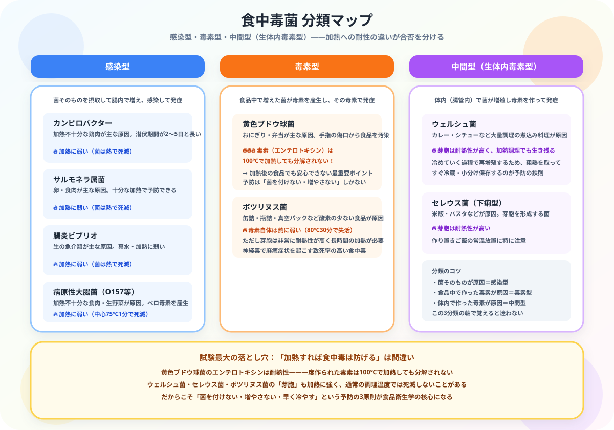

調理師免許の独学合格ガイド【2026年版】試験科目・勉強時間・スケジュール
大谷 一輝 より
こんにちは、大谷です！
飲食店や給食施設などの「現場のプロ」を目指して調理師のテキストを開いた瞬間……「うわっ、なんじゃこりゃ、覚える法律や食中毒菌の名前が多すぎて頭パンクするわ！」とフリーズしていませんか？（笑）
僕は会計士を目指して毎日猛勉強していますが、調理師で学ぶ「食品衛生学」や「栄養学」は、知っているだけで実生活も仕事も無双できる最高の知識です。
今回は、2年の実務経験をクリアした皆さんが、独学3ヶ月で確実に合格をもぎ取るための「最速の逆算ロードマップ」を優しくナビゲートします！
また、記事の末尾のほうにある【いいねボタン】をポチッと押してもらえると、めちゃくちゃ嬉しいです！
受験生
実務経験は2年クリアしたんですけど、筆記試験が6科目もあるって聞いて正直ビビってます……全部ちゃんと勉強しないといけないんですよね？
大谷（公認会計士受験生）
その気持ち、わかります！でも調理師試験は「6科目の合計で6割取ればクリア」というシンプルなゲームだと思ってください。全科目を完璧にする必要はゼロです。まずは一番出題数が多い『食品衛生学』というラスボス級の科目から狙い撃ちして、各個撃破していきましょう。ボスを倒せば、あとの科目は驚くほど楽に感じますよ！
調理師試験の基本情報
| 項目 | 内容 |
|---|---|
| 試験実施 | 都道府県（年1〜2回） |
| 合格率 | 全国平均60〜70% |
| 試験科目 | 6科目（公衆衛生学・食品学・食品衛生学・栄養学・食文化概論・調理理論） |
| 問題数 | 60問（五肢択一） |
| 試験時間 | 120分 |
| 合格基準 | 原則として60%以上の正答 |
| 受験資格 | 飲食業等での2年以上の実務経験 |
| 必要勉強時間 | 100〜150時間 |
⚠ 受験資格に注意：調理師試験には「飲食業等での2年以上の実務経験」が必要です。学校ルート（調理師専門学校）と試験ルート（実務経験＋試験）の2通りで取得できます。
6科目の特徴と攻略ポイント

| 科目 | 出題数目安 | 難易度 | 攻略のコツ |
|---|---|---|---|
| 公衆衛生学 | 10問 | ★★ | 法律・統計の暗記が中心 |
| 食品学 | 10問 | ★★ | 食品成分・保存方法を覚える |
| 食品衛生学 | 15問 | ★★★ | 食中毒菌・HACCP等が頻出 |
| 栄養学 | 10問 | ★★★ | 三大栄養素・ビタミンを整理 |
| 食文化概論 | 5問 | ★ | 歴史・地域料理を暗記 |
| 調理理論 | 10問 | ★★ | 調理操作と食材の変化を理解 |
💡 食品衛生学が最重要：出題数が最も多く、食中毒・HACCPなど実務にも直結する内容です。ここで確実に得点することが合格への近道です。
独学3ヶ月合格スケジュール
| 時期 | 学習内容 | 目標 |
|---|---|---|
| 1ヶ月目 | テキスト通読（全6科目） | 全体像を把握する |
| 2ヶ月目 | 科目別問題集・弱点把握 | 各科目60%以上の正答率 |
| 3ヶ月目 | 過去問5年分・模擬試験 | 60問を120分で解く練習 |
おすすめテキスト・参考書
- 「調理師テキスト」（全国調理師養成施設協会）：試験の公式教材。内容が網羅されており独学の基本書として最適
- 「調理師試験 合格のための問題集」：過去問ベースの問題集。試験直前の仕上げに活用
- 各都道府県の過去問題集：都道府県によって出題傾向が異なるため、受験地の過去問を必ず解く
合格後のキャリアと活用シーン
| 活用シーン | メリット |
|---|---|
| レストラン・料理店 | 調理師として名刺・肩書きに記載できる |
| 給食施設・病院 | 栄養士と並ぶ専門職として採用されやすい |
| 独立・開業 | 飲食店経営の信頼性が高まる |
| 栄養士・管理栄養士への道 | 調理師免許が取得の足がかりになる場合も |
まとめ
- 受験資格として飲食業等での2年以上の実務経験が必要
- 合格率60〜70%で比較的取りやすい国家資格
- 食品衛生学が出題数最多でここを固めることが最重要
- 独学は3ヶ月・100〜150時間が目安
- 受験する都道府県の過去問を必ず解くこと
🍳
現場で働きながら勉強する皆さんへ、心から応援しています
2年の実務経験を積みながら試験勉強まで両立するのは本当に大変なことです。でも「現場のプロ」の称号まであと一歩。食品衛生学というラスボスさえ攻略すれば、残りの科目はきっと驚くほど軽く感じます。この記事が「あ、そういうことか！」につながったら、僕の執筆のモチベーション維持のために、この下にある【いいねボタン】をポチッと押してもらえると、めちゃくちゃ嬉しいです！
Study Questで今日の学習時間を記録して、合格までの道のりを一緒に歩んでいきましょう。